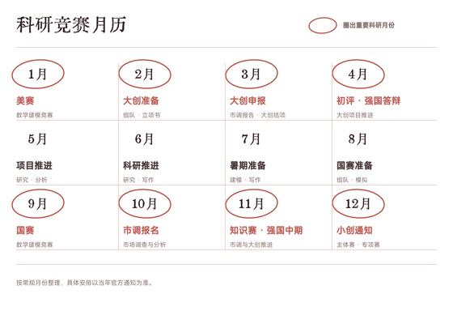

科研竞赛规划
打破信息差，提早规划。

- 学院平台数据科学与人工智能研创训练平台
- 个人联系心仪导师通过邮件介绍专业背景、已掌握的技能和兴趣方向，询问是否有参与课题组的机会。
- 优秀师兄师姐经验详情可参考统计学院《飞跃手册》。
参与科研后，可由指导教师出具相关证明，再由学院根据实际工作与成果统一评定。具体认定方式以本学院当年推免实施细则为准。
 统计学院学业规划平台
问智能体
统计学院学业规划平台
问智能体
打破信息差，提早规划。

参与科研后，可由指导教师出具相关证明，再由学院根据实际工作与成果统一评定。具体认定方式以本学院当年推免实施细则为准。